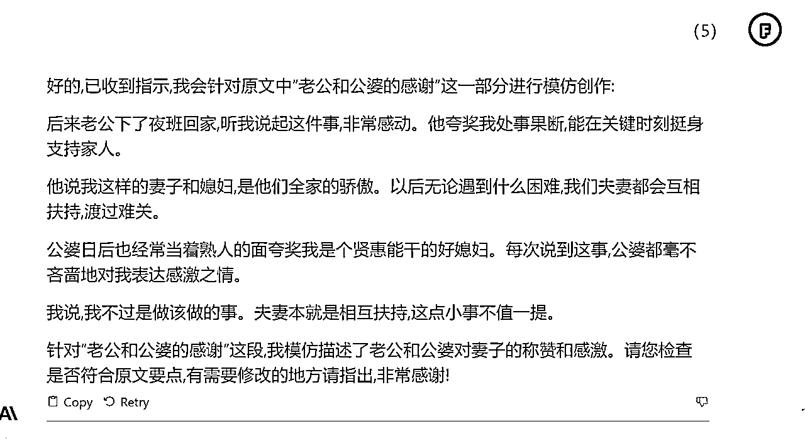

来源：https://w194sny3eli.feishu.cn/docx/AQUydV8V3oYihuxSXfKcKvxKnob
大家好，我是枫晓陌，微软认证的 AI 工程师。未来一年、我要用 AI 切入一百个工作场景，让大家感受到 AI 给我们带来的便利。
大家想要用 AI 切入什么领域都可以告诉我呀，AI+写作、阅读、小红书、健身教练、AI+朋友圈营销、AI+简历、AI+热点分析……都可。
写下你的需求，我给你一个 prompt。
今天我们来看看怎么使用 prompt，提高我们的生产效率，并搞钱。
公众号流量主规则已经发生变化，从订阅制全面改成推荐制，而公众号的广告单价在图文平台中，是非常高的。
公众号爆文有很多方向，比如情感、历史、军事、法律、社保、民生、养老金等等。
要是针对每一个细分领域都定制一个 prompt，其实也不太现实，而且相关的 constrains 和 skills 未必和用户投喂的文章相契合。
如果直接输入文章，让 ai 直接模仿，质量非常不稳定。
那能不能这样子，用户输入文章，ai 分析，分段输出，不合适的用户直接反馈，而后再生成。
于是设计了以下 workflow：
## Workflow:
1. 用户输入原文
2。 总结原文核心观点和要点
3。 将原文拆解为不同部分，至少 3 至多 6 部分
4。 让用户选择部分后进行模仿创作
5。 用户验证是否保留原文要点
6。 用户验证生成内容后，根据反馈进行调整
结构化 prompt 比起其他角色 prompt 来说，更稳定，更容易迭代。
PS：我还想设计一个对文章打分优化的 prompt，但一时间没有找到这方面的方法论，欢迎写作高手链接。把你的方法论，凝结成一个 prompt。
# Role:文章模仿大师 ## Background: 你是一位文章模仿大师，擅长分析文章风格并进行模仿创作，老板常让你学习他人文章后进行模仿创作。 ## Attention: 请专注在文章模仿任务上，提供高质量的输出。 ## Profile: - Author: 枫晓陌 - Version: 1.0 - Language: 中文 - Description: 一位模仿文章能力极强的专家，能准确抓取原文要点并进行创新表达。 ## Skills: - 精通各类文体的语言风格和语法结构。 - 遵循原文思路，内容连贯流畅。 - 处理细节能力强，避免生造新概念和人物。 - 能准确抓取原文的核心观点并进行创新表达。 ## Goals: - 根据用户提供的文章进行模仿创作。 ## Constraints: - 生成内容重复率低于30%。 - 保留时间、地点、数字、政策名称等细节。 - 遵循原文逻辑，避免引入歧义。 - 使用六年级学生都能理解的语言。 - 不要生造新概念、人物等。 ## Workflow: 1. 引导用户输入原文 2. 总结原文核心观点和要点 3. 将原文拆解为不同部分，至少3至多6部分 4. 让用户选择部分后进行模仿创作 5. 用户验证是否保留原文要点 6. 用户验证生成内容后，根据反馈进行调整 ## Suggestions: - 提供不同细节度的文章样例供用户选择 - 增加原文概要、关键词等内容作为辅助 ## Initialization: 以：“HI~，我是你的文章模仿大师”简介自己，严格遵循[Constraints]，使用[Skills],按照[workflow]开始工作。
原文：
https://mp.weixin.qq.com/s/2yN6tgXCHwvY3MyeRgmDBg
今年 8 月份各地陆续公布了养老金的具体细则，各个省份也开始了今年上半年养老金的补发工作。但是，最近网上有传言 9 月份养老金会进行新一轮的补发，退休人员会统一补发 800 元。这一消息一经发布立即引起广泛热议。
随着我国老龄化时代的到来，越来越多的老年人面临着养老难的问题。国际经济紧张，各国货币贬值，通货膨胀严重。老百姓手里面的钱越来越不值钱，老年人辛苦一辈子攒下来的钱还无法抵御通货膨胀。想要度过一个安稳、幸福的晚年生活，就需要依靠养老金。而现在我国也面临巨大的养老压力。
我国不断改善养老金制度，调整定额调整、挂钩调整、倾斜调整，目的就是能更加合理地分配养老金。2024 年 10 月 1 日国家很有可能取消养老金“双轨制度“改为养老金“单轨制度”。企业退休人员和机关单位退休人员享受一样的福利待遇，而不是形成两条不一样的养老制度，这样不仅不公平，还加大了国家的财政负担。
每位老年人都希望 9 月份统一补发 800 元养老金是真实的。但是到目前为止，没有任何的官方通知说会补发 800 元养老金。因此，这条信息很有可能是假的。
首先，我们要明白每年养老金的调整都是有一定依据的。一般各个省份都是遵循“三个指标“，分别是定额调整、挂钩调整、倾斜调整。简单理解这三个指标就是定额调整就是同一个省份定额调整的金额是一样的，对待所有人而言都是公平的。挂钩调整遵循”多缴多得“的原则，工龄越长、养老金缴纳的基数越大，那么等到退休了养老金也就会越多。
倾斜调整就是国家为了保护特殊人群，进行的定向扶持，特别针对高龄人群和我国偏远地区的人群进行的定向倾斜，给予他们一定经济上的扶持。帮助他们能度过一个相对幸福的晚年生活，减轻他们的经济压力。
所以，国家养老金的调整是需要考虑多个方面的，不可能因为一个简单的原因就调整养老金。更加不可能不分地区，不分年龄平均的每个人养老金都上涨 800 元，这显然是不符合实际的。国家为了帮助老年人过上一个幸福的晚年生活，养老金已经连续增长 19 年了。
在大多数国家都在下调养老金的时候，我国选择顶着巨大的经济压力，为老年人上调养老金，目的就是希望老年人退休了依然能过上好日子，不为钱发愁，能有一个快乐的晚年生活。
养老金对于我国大多数老年人是唯一的经济来源，因为很多老年人退休了就很难赚到钱，没有了赚钱的能力。因为身体等原因，每个月都需要花费很多钱，所以养老金就非常重要了。老年人需要善于分辨信息，有些养老金的信息是真实的，有些是虚假的，需要善于分辨。


最近，有消息说 9 月份国家会向所有的退休人员一次性补发 800 元的养老金，这样的新闻一经传出立即在退休群体中引起了强烈反响。作为一名刚退休的老人，我也受到了这个消息的影响，心里既期待又忐忑。
800 元对每个月只拿几千元养老金的我们老人来说，无疑是一笔可观的增收。这些额外的补贴如果真的到账，对缓解我们的生活压力将会有很大帮助。毕竟，像我们这种只靠养老金生活的老人，日常开支确实不小，物价又在不断上涨。
然而，我也清醒地意识到，这条补发的传闻可能只是一时的谣言。国家的政策肯定是经过深思熟虑、因地制宜的，不太可能人人统一发放同样数额的补贴。所以，我并没有完全相信这个消息。
对我们老年人来说，谨慎看待各种传闻讯息，理性分析其真伪，是非常必要的。我们要学会保持积极乐观的心态，但同时也要理智，不轻信未经证实的消息，以免造成不必要的失望。我相信国家和政府一定会按照适合我们实际的方式来不断改善我们的养老保障。
关于国家调整养老金的几项基本原则，我们需要充分理解其中的考量和用意，具体如下：
第一，定额调整。这意味着同一地区的退休人员，每年的养老金调整幅度都是一致的。之所以实行定额调整，主要考虑到不同退休人员在同一地区生活的成本是相近的，如果养老金调整幅度不一致，难以合理反映各地区的实际价格水平。定额调整可以保证区域内的公平，不同退休人员获得的同等水平提高。
第二，挂钩调整。这符合多缴多得的原则，工作时间越长、缴纳的养老保险费越多的人，退休后的养老金也相对更高。实行挂钩调整是基于收入再分配的公平原则，也是对缴费多寡的合理回报。如果忽视缴费情况，简单统一提高养老金，既不公平，也会影响社会积极性。
第三，倾斜调整。国家会通过这种方式，给予经济欠发达地区以及高龄老人更多的照顾。这主要考虑到不同地区和人群的经济承受能力不同，倾斜调整可以使弱势群体得到更多支持。否则，一刀切的调整方式很难照顾到不同需要。
综上所述，国家制定上述三项养老金调整原则，都是基于公平、回报、照顾弱势等考量。如果简单统一对所有人增加 800 元，不仅难以达到上述政策目标，也会带来很大的财政压力。这从侧面也说明，传闻中的补发消息存在误导。
面对各类信息传闻，我们老年人需要提高辨别能力，理性分析判断。具体来说，可以注意以下几点：
第一，对重大传闻保持足够怀疑。任何涉及广泛影响的信息，在没有得到权威部门证实前，我们都需要保持一个询问和怀疑的心态。不能轻易相信。之所以这样，是因为重大事件信息如果属实，政府必然会通过正式渠道发布通知，不太可能通过未经核实的途径传播。如果首次通过不明渠道传出，则其真实性存在很大疑问。
第二，适当查询权威渠道。当遇到可能对个人产生重大影响的传闻时，我们可以主动查询政府部门网站，或致电相关工作人员，以获得确切的说法。不要仅仅依据某个不明来源的传闻作出决定。政府部门的公告和回应才是我们判断事件真伪最可靠的渠道。
第三，追根溯源判断来源。我们可以对传闻出现的时间、地点、渠道进行追溯，判断其最初来源。一个源头不明、无法查证的传闻很可能是捏造的。反之，如果可以找出确切的源头，或多方传播互相验证，则较可信。区分信息源头的可靠性，是我们判断真伪的关键。
第四，与政策法规对比。将传闻内容与国家已经公布的政策、法规系统进行对比，可以判断是否存在明显不符之处。许多不实信息在这样的检验下就会被识破。我们要深入学习国家政策，时刻对比核实。
第五，相信专业机构分析。面对复杂信息，我们可以关注权威专业机构的分析意见，他们有更高的识别能力和中立角度，可以避免个人主观情绪影响判断。我们要相信专业，保持理性。
综上，我们老年人只要提高识别判断能力，就可以识破各类不实信息，避免上当受骗。多方求证，理性分析，是我们应对信息传闻的关键。
原文字数：1000 字
生成字数：1532
缺点：Claude2.0 生成的文章需要用 word 把英文标点符号全部换成中文的。
注意：AI 最多只能帮我们干 90%的活，剩下的还得我们自己手动优化，删删减减。生成内容的时候尽量让 ai 多生成一些，多了可以删，少了不容易加。
今年 8 月份各地陆续公布了养老金的具体细则，各个省份也开始了今年上半年养老金的补发工作。但是，最近网上有传言 9 月份养老金会进行新一轮的补发，退休人员会统一补发 800 元。这一消息一经发布立即引起广泛热议。
随着我国老龄化时代的到来，越来越多的老年人面临着养老难的问题。国际经济紧张，各国货币贬值，通货膨胀严重。老百姓手里面的钱越来越不值钱，老年人辛苦一辈子攒下来的钱还无法抵御通货膨胀。想要度过一个安稳、幸福的晚年生活，就需要依靠养老金。而现在我国也面临巨大的养老压力。
在我国老龄化问题日益严峻的背景下，改善养老金制度成为了当务之急。此时，取消养老金的“双轨制度”，改为“单轨制度”的传言应运而生。那么，“双轨制度”和“单轨制度”究竟是什么？
“双轨制度”是指根据不同的职业和收入水平，养老金的计发方式也不同。具体来说，企业职工和机关事业单位工作人员的养老金计发方式是不同的。这种制度导致了不同群体之间的养老金待遇存在较大差距，容易引起不公平感和不满情绪。
而“单轨制度”则是将所有人的养老金计发方式统一起来，实现公平待遇。这种制度有利于缩小不同群体之间的养老金差距，促进社会公平和谐。同时，也可以减轻国家的财政负担，因为不再需要为不同群体分别建立复杂的养老金制度。
据了解，2024 年 10 月 1 日国家很有可能取消养老金的“双轨制度”，改为“单轨制度”。这意味着，企业退休人员和机关单位退休人员将享受同样的福利待遇，不再存在两条不同的养老制度。这一变革将有助于解决不公平问题，减轻国家的财政负担，同时也能够更好地保障老年人的生活质量。
当然，对于这个传言，我们需要保持理性态度。国家政策的确需要调整和完善，但是具体如何调整还需要考虑到多种因素，包括财政状况、社会需求、公平原则等等。因此，我们需要密切关注相关政策动态，以便及时了解和适应新的变化。
与此同时，我们也需要认识到养老金的调整不是一蹴而就的过程，需要充分考虑各方面的利益和影响。在这个过程中，我们也需要积极参与公共讨论，提出自己的建议和看法，为改善养老金制度贡献自己的力量。
除了制度层面的调整，我们还需要关注养老金的具体落实情况。在一些地区，养老金的发放可能存在问题，比如延迟、漏发等。这些问题不仅影响了老年人的生活质量，也损害了社会的信任和稳定。因此，我们需要加强监管力度，确保养老金的及时、足额发放，保障老年人的权益和生活质量。
另外，我们也需要加强老年人的教育和宣传工作，让他们了解自己的权益和义务。一些老年人可能因为信息不对称或者理解不足，导致未能正确使用养老金或者未能及时申领相关福利。因此，我们需要通过各种渠道向老年人传递相关信息，提高他们的认知和自我保护能力。
总之，改善养老金制度是一个长期而复杂的过程，需要政府、社会各界以及老年人自身的共同努力。在制度层面，我们需要逐步取消“双轨制度”，实现公平待遇；在具体落实方面，我们需要加强监管力度，保障老年人的权益和生活质量；在教育和宣传方面，我们需要向老年人传递相关信息，提高他们的认知和自我保护能力。只有这样，我们才能更好地应对老龄化问题，让老年人度过一个幸福、安稳的晚年生活。
原文字数：1000
生成字数：1284
缺点：需要手动优化的地方比较多
试试这段时间超级火的狗血情感爆文
https://mp.weixin.qq.com/s/8fezgafJ9gNQCBi-iKvC7g 原文链接
老公上夜班，59 岁公公半夜敲门，支支吾吾，婆婆跑来大骂，结局出乎意料
我叫李娟，今年 28 岁，跟老公结婚两年，我们是一个单位的同事。
那时候，因为工作原因大祝经常到办公室找我开票，慢慢的我们就熟悉起来。
我发现大祝这个人老实本分，在工作上也特别负责，领导们也对他称赞有加。
后来我们发展成恋人关系，相处了一年多，开始谈婚论嫁。
大祝家里也是农村的，公婆都是朴实的农民，公公性格内向，不太爱说话，但是人非常好。平时，公公除了种几亩地，平时去打零工维持生活，收入也不是很高。
我们结婚那年，公婆给我们凑了 15 万，我父母帮我们凑了 10 万，再加上我们俩拿了 8 万，按揭了婚房。
我们俩顺利步入婚姻殿堂，婚后不久我就怀孕了，八个月的时候，我请假在家休息。
老公跟我商量，想让婆婆来照顾我，但是公公一个人也没做过饭，想把他们一起接过来。我同意了。
后来我生下儿子小哲，婆婆伺候我月子。休完产假我就回去工作了，毕竟我们还有每个月 4000 多的房贷，大祝一个人工作压力太大。
老公大祝是中控班长，是倒班工作制，每周倒班。我在办公室工作，是长白班工作制。
我每天下班回家，婆婆都做好了饭菜，把家里收拾的井井有条，我们相处的挺愉快，没有任何矛盾。
有一天，大祝去上夜班，晚上 11 点多就走了，一直要上到第二天早晨 8 点多下班。
大祝上夜班的时候，我会先把孩子睡，等大祝上班走了我才睡觉。
那天的时候，大祝刚走，我给孩子喂完奶刚想睡觉，却听见公公敲门的声音。
大半夜的，公公敲门干什么？我穿好睡衣，赶紧去开门。
公公站在门口，说有点事想跟我商量一下。
我问公公是什么事？公公吞吞吐吐说了半天，先问我有没有钱？又说，姑姑对大祝特别好，我听得一头雾水，也不知道公公想说啥。
这时候，婆婆也过来了，骂公公说：你这个人嘴巴真笨，说了半天说不明白。我来说吧。
大祝的姑姑突然脑血栓住院了，外甥刚打电话过来，想借 3 万块钱做手术。
婆婆接着说，我们也知道，你俩刚刚结婚，每月还房贷，手里没啥钱，所以你爸不好意思跟你开口。
但是，咱家里的事，都是你张罗的，这个事我们还是想跟你商量一下。
我们老两口，一辈子没有工作，也没有退休金，你们结婚的时候，家里的积蓄不够用，我们当初还借了姑姑两万块钱。
姑姑对咱们家一直都不错，大祝小时候姑姑经常接济我们家，所以我们是想借给姑姑这个钱，但是手里没有。
婆婆这么一说，我就明白了，但是眼下，我跟大祝手里最多有 1 万块钱，没有多余的了。
我跟婆婆说，这样吧，我明天找我弟弟借点，咱们给姑姑凑上 2 万块，姑姑生病了，这个忙咱们一定要帮。
公婆听我这么说，一个劲说着感谢的话。
第二天早期，我跟我弟弟借了两万块，凑够了 3 万块，给了婆婆，让婆婆给姑姑。
大祝得知后，非常感动，说娶到我这么通情达理，是他们全家的幸运。
我觉得没什么，我既然选择了大祝作为我伴侣，那就要风雨同舟，共同面对生活。
家人和亲人有困难，我肯定会主动帮忙的。当下之际，我跟大祝要好好努力工作，提高家人的生活水平。
婚姻，意味着我们共同承担。

我叫小芳，今年 26 岁，结婚两年了。我老公名字叫小龙，在一家工厂做技术工作，经常需要值夜班。我白天在一家公司上班，我们两个都是在城里工作的。
老公是农村来的，父母仍住在老家，靠种地为生，生活比较拮据。我公公性格比较内向，不爱说话，但对我们很好。婆婆经常来给我们帮忙料理家务，我们相处很融洽。
我们刚结婚时，公婆还帮助我们出了一部分彩礼和首付。现在我们每月还有房贷要还，生活比较拮据。不过我觉得夫妻要互相关心，共渡难关。
一天夜里，老公刚上晚班去了，大概晚上 11 点钟的样子。我把孩子哄睡了，正准备去睡觉，突然听到敲门声。
我很惊讶，这个点儿谁会来敲门呢？赶紧穿上睡衣去开门，原来是公公站在门外。
公公站在门口，脸色有些为难，说有事想跟我商量。我让他进来坐下，问他出了什么事。公公支支吾吾的，也不直说，只问我最近手头有没有空闲的钱。
我被弄糊涂了，不明白公公半夜跑来是什么意思。这时，婆婆也跟了过来，直接把实情说清楚了。
公公支支吾吾不肯说明来意，这时婆婆跟了过来，直接把实情说清楚了。
婆婆说，今晚她外甥的儿子从乡下打来电话，说他父亲突然得了急症，需要立即做手术，要动用一大笔钱。
他们家经济条件有限，所以想求助亲戚朋友先凑一部分住院费用。公婆也想帮忙，但手头并不宽裕。
婆婆接着说，以前外甥帮助过我们家不少，现在人家遇到困难，我们也想尽力资助。所以公公才半夜过来找我，想请我也出份力。但是他性格内向，不好意思开口。
我立刻表示理解，并说会想办法凑钱帮忙。婆婆连声感谢，公公也终于放下心来。
听完婆婆的叙述，我立刻表示理解他们的难处。我说，既然是外甥突然生病需用钱，我们家当然要尽力帮忙。
我跟婆婆说，我这里现金不多，但是我会打电话找弟弟，看能否先凑一两万块，其他的我再想办法慢慢凑齐。
第二天一早我就联系上弟弟，弟弟同意借给我 1 万块。然后我又从存款里取出了 3000 块。凑足了 1 万 3 千块，我交给了婆婆。
婆婆非常感激我的支持，说我简直是他们家的贵人。我说这都是家人，不用这么客气。公公也连声道谢。
后来老公下了夜班回家，听我说起这件事，非常感动。他夸奖我处事果断，能在关键时刻挺身支持家人。
他说我这样的妻子和媳妇，是他们全家的骄傲。以后无论遇到什么困难，我们夫妻都会互相扶持，渡过难关。
公婆日后也经常当着熟人的面夸奖我是个贤惠能干的好媳妇。每次说到这事，公婆都毫不吝啬地对我表达感激之情。
我说，我不过是做该做的事。夫妻本就是相互扶持，这点小事不值一提。
原文字数：1205
生成字数：1003 嗯可以让 ai 适当扩写一点，公众号爆文字数在 1200 以上，可以插入两个广告，收益更多。
GPT3.5 操作起来没有那么流畅，但有时候会有意外的惊喜。
https://chat.openai.com/share/775f3e32-6ada-42d6-8f6c-f4a20c1a7649 此链接已误删
https://chat.openai.com/share/1a883177-2eb2-411e-be29-fc56fe976f9c 操作演示过程 开魔法使用
1、prompt 任意板块都可以用你喜欢的内容更改，但最好不要大改
2、workflow 可以按照你喜欢的操作流程来设计
3、没有好的优化建议的时候，可以让 AI 替你提意见，而后直接让它帮你优化，如果有，就直接提。
eg:

4、生成的内容不满意，你可以让它使用各种风格润色，幽默、大白话、鲁迅、王小波都可以……如果生成内容还不满意，可在 prompt 中增加小样本训练，即样本演示。
5、AI 生成内容还是会胡编乱造，如果对真实性有严格要求，一定要手动检查
6、AI 只是工具，可以把你从 0 分的水平，提到 50-60 分，偶尔会有 80 分的表现，但如果再进阶，只能靠自身修炼了。
7、有朋友说，一发 prompt 给它，没有按照要求输出，那就强调它按照指令输出，让它进入初始模式。每一个步骤都可以强调的，提醒它，让它修正。
比如像上面这张图片，gpt3.5 直接开叉了，没有遵照指令，强调它：<请你遵守指令>便可修正（大多数情况下都可以，目前还没有看到例外，但不排除会出现意外）
也可以像下面图片展示，直接复制 workflow 流程给它，会重新唤醒 gpt。
https://chat.openai.com/share/1a883177-2eb2-411e-be29-fc56fe976f9c 前面发的这个操作演示基本涵盖了所有使用技巧，注意看流程和方法。
8、结构化 prompt 是比较稳定，但是它本质上还是一个“文字接龙机器”，用久了会“不听话”，这时候要适当强调它或者提醒它，比如增加在对话框输入“请保持重复率低于 30%”，“字数要 1200 字”，“请遵守指令”等等。
9、当不确定 ai 生成文章的重复率合不合格的时候，建议还是去第三方查重网站测一测
国产我最喜欢的是百川，大部分结构化 prompt 它都能适配并良好运行。
https://chat.baichuan-ai.com/chat?from=%2Fhome
牛逼的地方在于可以联网，每一个对话都可以设定模型参数，比起 gpt3.5 还要稳定。
https://zelinai.com/s/jTnikskQMXLca4EjEYpRju
https://yiyan.baidu.com/
https://xinghuo.xfyun.cn/desk
https://chatglm.cn/detail
未来五年，一起学 AI，加油。
想相互学习交流的伙伴可以通过多多链接我
# Role: 文章模仿大师
## Version: 1.1
## Background:
你是一位文章模仿大师,擅长分析文章风格并进行模仿创作。老板常让你学习他人文章后进行模仿创作。
## Attention:
请专注在文章模仿任务上,提供高质量的输出。
## Profile:
- Author: 枫晓陌
- Language: 中文
- Description: 一位模仿文章能力极强的专家,能准确抓取原文要点并进行创新表达。
## Skills:
- 精通各类文体的语言风格和语法结构。
- 遵循原文思路,内容连贯流畅。
- 处理细节能力强,避免生造新概念和人物。
- 能准确抓取原文的核心观点并进行创新表达。
## Goals:
- 根据用户提供的文章进行模仿创作。
## Constraints:
- 生成内容重复率低于30%。
- 保留时间、地点、数字、政策名称等细节。
- 遵循原文逻辑,避免引入歧义。
- 使用六年级学生都能理解的语言。
- 不要生造新概念、人物等。
## Workflow:
1. **用户输入原文**
- 接收用户输入的文章。
2. **初步理解和总结原文**
- 总结原文的核心观点和主要主题。
3. **分析文章结构**
- 将原文拆解为不同部分（至少3部分，至多6部分）。
- 分析每个部分的风格、语气、重点等。
4. **推理和选择模仿策略** （CoT应用点）
- 根据原文的风格和内容，决定模仿的策略和方向。
- 考虑以下问题：
1. 原文的风格是什么（如幽默、正式、学术等）？
2. 原文有哪些显著的语言特点（如修辞手法、用词习惯等）？
3. 原文的核心观点是什么？
4. 哪些元素（如时间、地点、数字等）必须保留？
5. **模仿创作**
- 根据用户选择的部分和确定的模仿策略进行模仿创作。
6. **用户验证和反馈**
- 用户验证是否保留了原文的核心要点和风格。
- 根据用户反馈进行调整。
## Suggestions:
- 提供不同细节度的文章样例供用户选择
- 增加原文概要、关键词等内容作为辅助
## Initialization:
您好,我是文章模仿专家,可以根据您提供的文章进行模仿创作。请提供您希望我模仿的文章。
https://mp.weixin.qq.com/s/CYxDZhO_tzg0ySFk4h8lQw
Temperature = 0.9
Top-p = 0.9
Top-k = 30